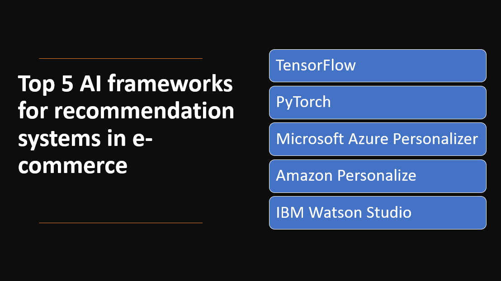

Introduction
Recommendation systems play a vital role in e-commerce by providing personalized and relevant product recommendations to users, enhancing their shopping experience and driving sales.
Artificial Intelligence (AI) frameworks offer powerful tools and algorithms to build effective recommendation systems that leverage user preferences, behavior, and item attributes.
In this blog post, we will explore the top five AI frameworks for recommendation systems in e-commerce and their contributions to personalized product recommendations.
Why use AI frameworks for recommendation systems in e-commerce
- AI frameworks enable personalized recommendations tailored to individual users in e-commerce.
- AI algorithms analyze data to generate accurate and relevant product recommendations.
- AI frameworks can handle large customer bases and diverse product catalogs.
- AI-powered systems provide instant, real-time recommendations based on user activity.
Here Are Our top five AI frameworks for recommendation systems in e-commerce:
1: TensorFlow
Overview and Importance
TensorFlow is a widely adopted and versatile AI framework that plays a significant role in recommendation systems for e-commerce. With its extensive capabilities and scalable nature, TensorFlow enables developers to build efficient and powerful recommendation models. It provides a comprehensive ecosystem for developing, training, and deploying recommendation systems, making it a preferred choice among data scientists and engineers in the e-commerce domain.
Learn more about TensorFlow
Key Features and Capabilities
Recommendation Algorithms
- TensorFlow provides powerful recommendation algorithms that enable businesses to deliver personalized recommendations based on user behavior and preferences.
Scalability and Distributed Training
- TensorFlow's distributed computing capabilities allow for efficient processing of large datasets and training recommendation models on distributed systems, ensuring scalability and faster training times.
Production Deployment
- TensorFlow provides tools and frameworks for deploying recommendation models in production environments, allowing businesses to serve real-time recommendations to their users efficiently.
2: PyTorch
Overview and Importance
PyTorch is a popular AI framework that has gained significant traction in recommendation systems for e-commerce. It is known for its dynamic computational graph, which provides flexibility and ease of use in building recommendation models. PyTorch's intuitive interface and extensive community support make it a preferred choice for researchers and developers in the field.
Learn more about PyTorch
Key Features and Capabilities
Dynamic Computational Graph
- PyTorch's dynamic computational graph allows for flexible and iterative development of recommendation algorithms, enabling easy experimentation and model modification.
GPU Acceleration
- PyTorch's support for GPU acceleration enables efficient training and inference of recommendation models, making it well-suited for handling large datasets and generating real-time recommendations.
Library Support
- PyTorch provides a wide range of libraries and tools that simplify the development of recommendation systems, offering pre-built components and utilities for tasks such as data preprocessing, model evaluation, and visualization.
3: Microsoft Azure Personalizer
Overview and Importance
Microsoft Azure Personalizer is an AI framework designed specifically for building recommendation systems in the e-commerce domain. It leverages advanced machine learning algorithms and reinforcement learning techniques to deliver personalized recommendations to users. Azure Personalizer enables businesses to enhance user engagement, increase customer satisfaction, and drive revenue by providing tailored recommendations.
Learn more about Microsoft Azure Personalizer
Key Features and Capabilities
Personalized Recommendations
- Azure Personalizer generates personalized recommendations based on contextual information and user feedback.
Online Learning
- The service supports online learning, allowing models to continuously adapt and improve over time.
A/B Testing and Optimization
- Azure Personalizer facilitates A/B testing to compare different recommendation strategies and reinforcement learning-based optimization to enhance recommendation effectiveness.
4: Amazon Personalize
Overview and Importance
Amazon Personalize is an AI framework specifically designed for building recommendation systems in the e-commerce industry. Powered by advanced machine learning algorithms, it enables businesses to deliver personalized product recommendations to their customers, improving engagement, conversion rates, and customer satisfaction. With its scalable and flexible architecture, Amazon Personalize simplifies the process of building and deploying highly accurate recommendation models.
Learn more about Amazon Personalize
Key Features and Capabilities
Customized Recommendation Models
- Amazon Personalize enables the creation of customized recommendation models based on unique business needs and data.
Real-time Personalization
- The service provides real-time personalized recommendations to deliver a dynamic and personalized user experience.
Automated Machine Learning
- Amazon Personalize automates the process of model training, hyperparameter optimization, and deployment, making it accessible to users without extensive machine learning expertise.
5: IBM Watson Studio
Overview and Importance
IBM Watson Studio is an AI framework that offers a comprehensive set of tools and services for data scientists and developers to build and deploy machine learning models. With its powerful features and intuitive interface, Watson Studio enables businesses to leverage AI technology for recommendation systems in e-commerce. It provides an integrated environment for data preparation, model development, deployment, and monitoring, streamlining the end-to-end machine learning workflow.
Learn more about Amazon Personalize
Key Features and Capabilities
Data Preparation and Exploration
- IBM Watson Studio provides capabilities for data preprocessing, cleansing, and exploration, allowing users to analyze and prepare data for recommendation model training.
Model Building and Deployment
- The platform supports the development and deployment of recommendation models using various techniques, including collaborative filtering, content-based filtering, and hybrid approaches.
Experimentation and Evaluation
- IBM Watson Studio offers tools to experiment with different recommendation algorithms, evaluate model performance, and optimize recommendation strategies based on business objectives and user feedback.
Conclusion
AI frameworks play a significant role in recommendation systems for e-commerce, enabling personalized product recommendations, enhancing customer engagement, and driving revenue. The top five AI frameworks for recommendation systems are TensorFlow, PyTorch, Microsoft Azure Personalizer, Amazon Personalize, and IBM Watson Studio.
Key features, capabilities, and advantages of these frameworks include:
- TensorFlow: Versatile framework for building complex recommendation models using neural networks and handling large-scale data.
- PyTorch: Dynamic computation graph and flexibility for creating customized recommendation models.
- Microsoft Azure Personalizer: Cloud-based service using reinforcement learning algorithms for real-time, context-aware recommendations.
- Amazon Personalize: Fully-managed service leveraging machine learning algorithms for personalized recommendations based on user behavior and preferences.
- IBM Watson Studio: Comprehensive platform with tools and capabilities for building and deploying recommendation systems with AI-powered algorithms.
Recommendation systems have a significant impact on e-commerce, customer engagement, and revenue generation. They provide tailored product suggestions, enhancing the shopping experience, increasing customer satisfaction, and driving sales. Businesses are encouraged to explore these AI frameworks and leverage their advanced algorithms and techniques to deliver personalized product recommendations, boost customer satisfaction, and achieve higher sales. By embracing these AI frameworks, businesses can enhance their e-commerce strategies, drive customer engagement, and generate revenue growth.